Далеко не во всех проектах целесообразно использовать Ардуинку целиком, иногда достаточно всего нескольких выводов микроконтроллера, да и интегрировать её в схему не всегда удобно. В таких случаях разумно совместить простоту и удобство среды программирования Arduino IDE и дешевизну и малый размер «голого» микроконтроллера, тем более, что прошивать такие МК можно непосредственно с помощью Ардуинки.
В семействе AVR огромное множество микроконтроллеров на любой вкус. Для стандарт tinyAVR (ATtinyxxx) характерны небольшое количество флеш-памяти (до 16 килобайт) и количество линий ввода-вывода в совокупности с низким энергопотреблением, а для стандарта megaAVR (ATmegaxxx) доступно уже до 256 килобайт памяти и до сотни портов ввода-вывода (зависит от модели МК), так же доступна расширенная система команд и периферийных устройств. Сегодня будем прошивать ATmega8, цифра 8 в названии говорит нам о том, что у этого микроконтроллера 8 килобайт встроенной памяти. На картинке ниже расписаны выводы микроконтроллера в DIP корпусе. Кстати у ATmega48/88/168/328 выводы расположены аналогичным образом.
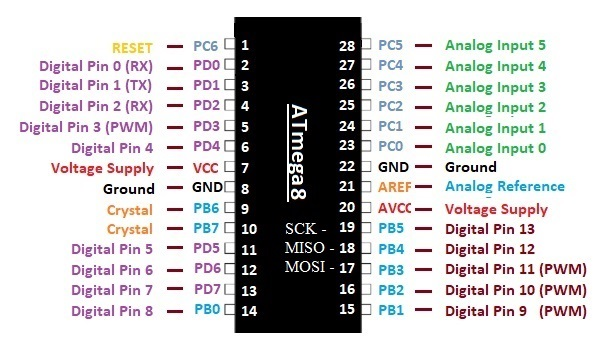
Для прошивки нашего микроконтроллера понадобятся его порты последовательного периферийного интерфейса (SPI — Serial Peripheral Interface) — это синхронный протокол последовательной передачи данных, используемый для связи микроконтроллера с одним или несколькими периферийными устройствами. В нашем случае это выводы:
В первую очередь необходимо из ардуинки сделать программатор, в этом нет ничего сложного, нужно просто загрузить в неё код из готового примера «ArduinoISP».
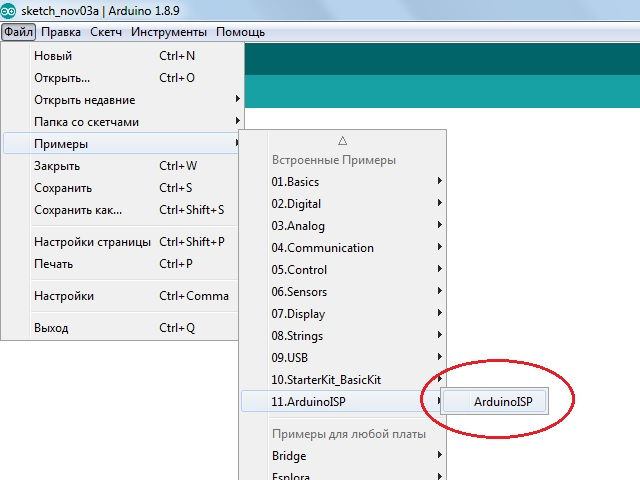
После его загрузки в плату (кстати я буду использовать Arduino UNO для наглядности, но это не принципиально, можно и другую) в меню Инструменты — >>Программатор необходимо выбрать «Arduino as ISP».
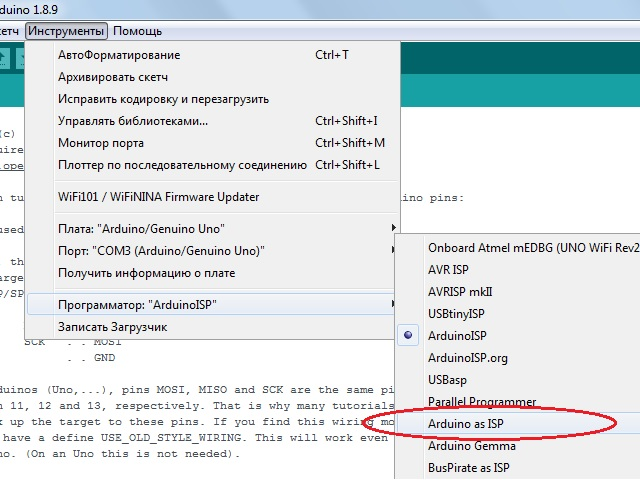
Дальнейшие действия по подключению МК к Ардуинке описаны в комментариях к коду который мы в неё загрузили, а именно подключаем следующие пины:
Дополнительно подключим на нулевой цифровой выход ATmega8 (вторая ножка микросхемы) светодиод через токоограничивающий резистор на 220 Ом, для наглядного подтверждения того, что микроконтроллер работает.
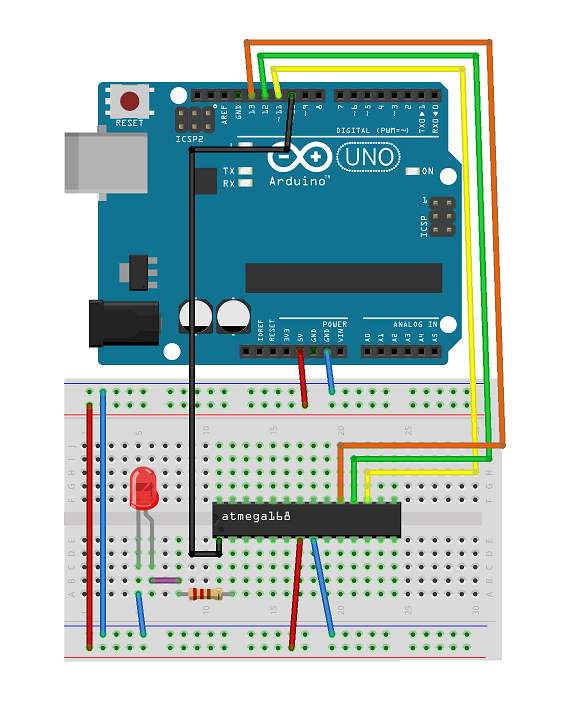
// Put an LED (with resistor) on the following pins:
// 9: Heartbeat — shows the programmer is running
// 8: Error — Lights up if something goes wrong (use red if that makes sense)
// 7: Programming — In communication with the slave
Как видно из описания примера «Arduino ISP» к 7, 8 и 9-му пинам платы Ардуино можно подключить информационные светодиоды (через резисторы) отображающие ход работы программатора, но это по желанию.
Теперь почти всё готово, осталось только сообщить среде программирования, что именно мы собираемся прошивать. Для этого нужно добавить нашу ATmega8 в среду разработки Arduino IDE, тоесть нужно установить так называемое ядро, или как оно называется в самой IDE – плату.
MiniCore – ядро для поддержки микроконтроллеров ATmega328, ATmega168, ATmega88, ATmega48 и ATmega8, для его установки нажимаем Файл —>> Настройки и в открывшемся окне ищем строчку: «Дополнительные ссылки для менеджера плат:», в это поле необходимо ввести ссылку:
https://mcudude.github.io/MiniCore/package_MCUdude_MiniCore_index.json
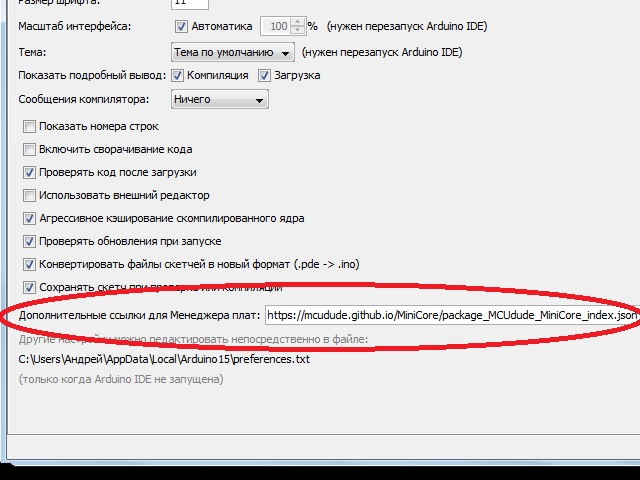
Далее заходим в Инструменты —>> Плата —>> Менеджер плат находим и устанавливаем нужное ядро.
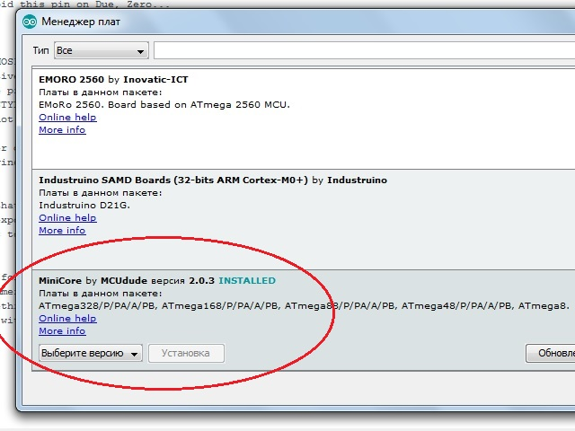
После всех манипуляций в менеджере плат должно появиться следующее:
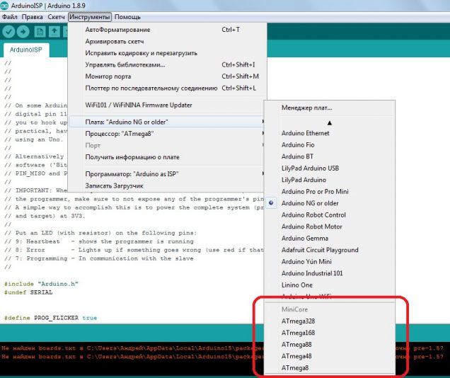
В качестве платы выбираем нашу ATmega8, параметр «Clock:» устанавливаем «Internal 8 MHz», так МК будет работать от внутреннего генератора.
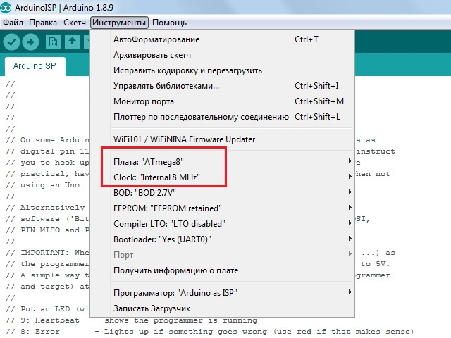
Все готово! Теперь подключаем плату Ардуино к компьютеру и не забыв выбрать нужный COM порт, выбираем в меню «Инструменты» пункт «Записать загрузчик».
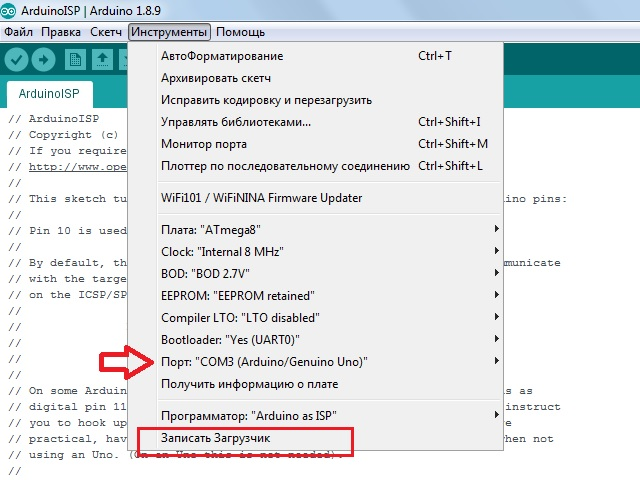
Теперь МК знает от какого генератора и на какой частоте ему работать, можно загружать в него свои программы. Для примера загрузим классическую мигалку, только поменяем порт вывода на нулевой (вторая нога МК), именно к нему по схеме мы подключили светодиод.
void setup() {
pinMode(0, OUTPUT);
}
void loop() {
digitalWrite(0, HIGH);
delay(1000);
digitalWrite(0, LOW);
delay(1000);
}
Загружать нужно не кнопкой как обычно, а через меню Скетч —>> Загрузить через программатор, если все сделано правильно, то светодиод начнет мигать.
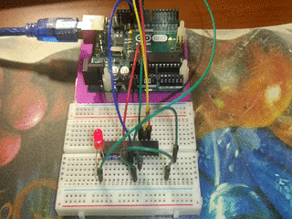
В Arduino IDE можно прошить ATmega8 и без установки дополнительных плат, выбрав в качестве платы «Arduino NG or older» и в качестве процессора «aTmega8». Но в таком случае не будет возможности выбора от какого генератора (внешнего или внутреннего) и на какой частоте будет работать МК, а работать он будет от внешнего генератора на частоте 16 MGz, и перезаписать его настройки в дальнейшем без подключения кварцевого резонатора к выводам 9 и 10 будет невозможно, будьте внимательны!
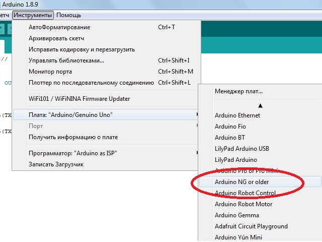
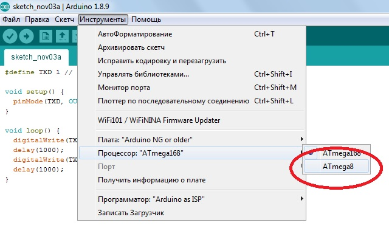
Ну и напоследок приведу ссылки на ядра для работы с микроконтроллерами серии ATtiny, устанавливаются они аналогично MiniCore: